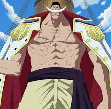
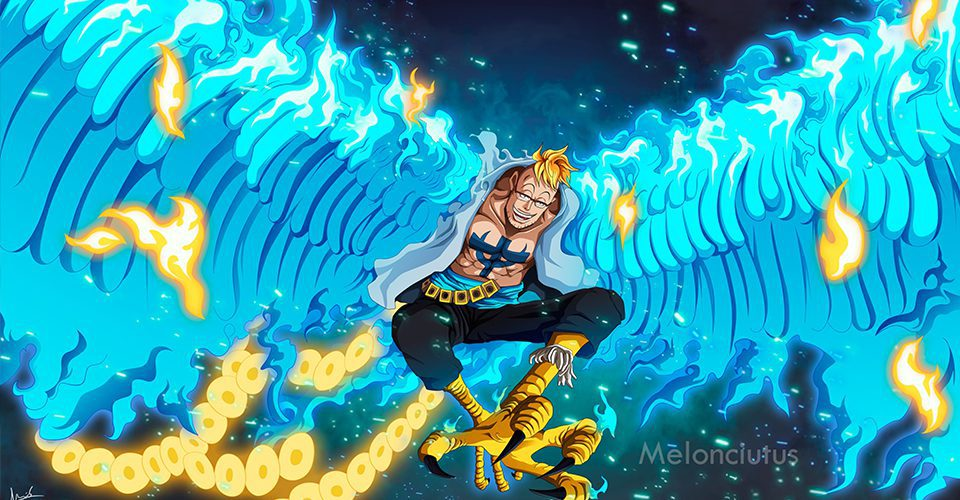
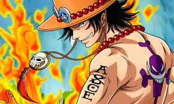
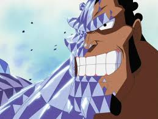
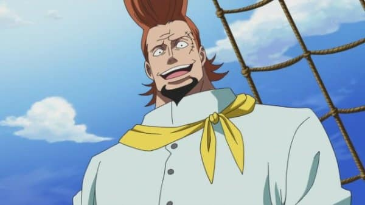
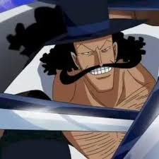

L'Équipage de Barbe Blanche (白ひげ海賊団, Shirohige Kaizokudan) était anciennement l'équipage pirate le plus puissant du monde. Il avait comme capitaine Edward Newgate alias Barbe Blanche, le seul pirate ayant pu rivaliser avec le Roi des Pirates, Gol D. Roger lors d'un combat.[3] Plutôt qu'être sous les ordres directs du capitaine, les membres de l'équipage sont séparés en seize divisions, chacune dirigée par un commandant. L'équipage a au moins quarante-sept équipages alliés dans le Nouveau Monde. Suite à la mort de Barbe Blanche et d'Ace à Marine Ford, les membres restants de l'équipage affrontèrent les pirates de l'équipage de Barbe Noire durant la Guerre de Représailles, où ils furent vaincus brutalement. Par la suite, ce dernier conquit les territoires de Barbe Blanche et Marshall D. Teach usurpa la position d'empereur du défunt pirate. Par conséquent, l'équipage de Barbe Blanche perdit la plupart de son influence et de sa force.
| Nom | Position | Prime | Age | taille | fruit du demon : type | photo | Rire |
|---|---|---|---|---|---|---|---|
| Barbe Blanche | Capitaine | 5.046.000.000 Berries | 72 | 6m66 | Gura Gura no Mi : Paramecia |  | |
| Marco | Commandant 1ère division | 1.374.000.000 Berries | 45 | 2m03 | Tori Tori no Mi modèle phoenix : Zoan Mythique |  | |
| Portgas D. Ace | Commandant 2ᵉ division | 550.000.000 Berries | 20 | 1m85 | Mera Mera no Mi : Logia |  | |
| Joz | Commandant 3ᵉ division | Inconnue | 42 | 5m03 | Kira Kira no Mi : Paramecia |  | |
| Satch | Commandant 4ᵉ division | Inconnue | Inconnu | Inconnue | Aucun |  | |
| Vista | Commandant 5ᵉ division | Inconnue | 47 | 3m28 | Aucun |  |